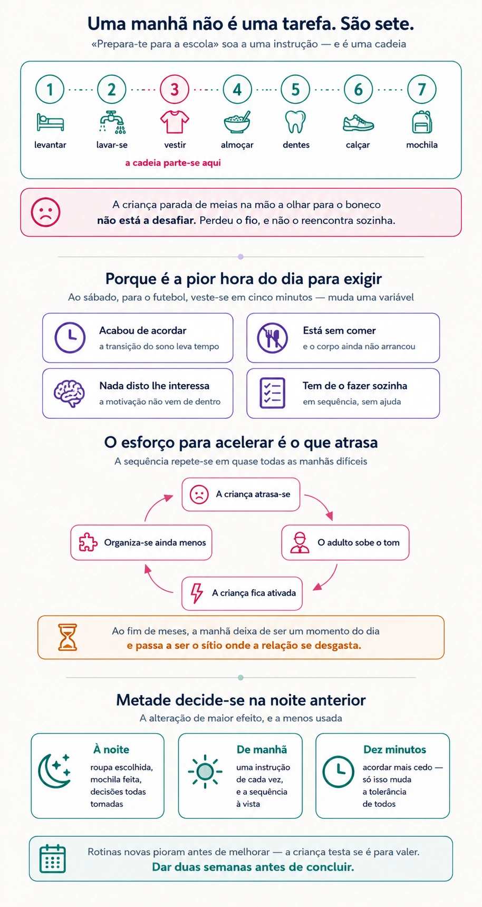

Manhãs difíceis: desmontar a rotina em passos
Quando a manhã corre mal todos os dias, o problema quase nunca está na motivação. Está na sequência — e uma sequência desmonta-se e volta a montar-se.
A situação
Começa às sete e meia e acaba às oito e um quarto, à porta da escola, com toda a gente de mau humor. Pelo meio houve três avisos, dois gritos e uma ameaça que ninguém tenciona cumprir.
E repete-se. Todos os dias, com pequenas variações, há meses.
O que a família conclui, ao fim de um tempo, é que a criança faz de propósito — porque ao sábado veste-se sozinha em cinco minutos para ir ao futebol. Mas a conclusão está trocada, e a diferença entre os dois dias explica o problema em vez de o agravar.
O que se sabe
A manhã é a pior hora do dia para exigir autorregulação
Todas as condições estão contra. A criança acaba de acordar, e a transição do sono para o estado desperto leva tempo — mais em umas crianças do que noutras. Está sem comer. E é-lhe pedido que faça, em sequência e sozinha, seis ou sete coisas que não lhe interessam nenhuma.
Ao sábado, para o futebol, muda uma variável: a motivação intrínseca fornece de fora o que a criança não consegue gerar de dentro. Não é prova de que consegue sempre — é prova de que consegue naquelas condições.

Uma manhã não é uma tarefa. São sete.
«Prepara-te para a escola» soa a uma instrução e é, na verdade, uma cadeia: levantar, ir à casa de banho, vestir, tomar o pequeno-almoço, lavar os dentes, calçar, verificar a mochila.
Cada elo exige lembrar o que vem a seguir enquanto se executa o atual — que é precisamente o que a memória de trabalho faz, e é a capacidade mais frágil em muitas crianças. Basta uma distração para a cadeia se partir, e a criança fica parada a meio, sem estar a desobedecer.
A criança que está de meias na mão a olhar para o boneco não está a desafiar ninguém. Perdeu o fio, e não tem forma de o reencontrar sozinha.
O aviso repetido deixa de informar
Quando os avisos são muitos e as consequências não chegam, deixam de funcionar como informação e passam a fazer parte do ruído da manhã. A criança aprende que o primeiro «veste-te» não conta, nem o segundo — e começa a responder só ao terceiro, dito em voz alta.
Isto não é manipulação. É aprendizagem: a criança aprendeu qual é o sinal que efetivamente marca o momento de agir.
O ciclo que se instala entre os dois
Há uma sequência que se repete em quase todas as manhãs difíceis. A criança atrasa-se; o adulto sobe o tom; a criança fica ativada, e quanto mais ativada, menos consegue organizar-se; o que aumenta o atraso, que aumenta o tom.
O esforço para acelerar é precisamente o que atrasa. E, ao fim de meses, a manhã deixa de ser um momento do dia e passa a ser o sítio onde a relação se desgasta.
Metade da manhã decide-se na noite anterior
É a alteração de maior efeito e a menos usada. Roupa escolhida, mochila feita, decisões tomadas — tudo o que se resolve à noite deixa de ter de ser resolvido às sete e meia, quando ninguém tem capacidade para decidir nada.
E há a parte anterior a essa: uma manhã difícil é frequentemente o sintoma de uma noite curta. Antes de reorganizar a manhã, vale a pena verificar se a criança está a dormir o que precisa.
O que fazer
Cronometrar antes de mudar. Durante três dias, anotar a que horas acontece cada passo. É quase sempre revelador — o atraso costuma concentrar-se num ponto só, e não estar distribuído pela manhã inteira.
Atacar esse ponto, não a manhã toda. Se o bloqueio é o vestir, é aí que se intervém. Reorganizar tudo de uma vez raramente pega.
Tornar a sequência visível. Uma lista com os passos, ilustrada nas idades mais baixas, afixada no sítio onde a manhã acontece. Não é infantilizar: é retirar da memória o que pode estar na parede.
Uma instrução de cada vez. «Veste o casaco» — e só quando estiver vestido, «calça os sapatos». Três instruções seguidas são, na prática, uma instrução e duas perdidas.
Tornar o tempo percetível. Um temporizador à vista informa sem que ninguém tenha de avisar. Funciona melhor do que o aviso de dez em dez minutos, e retira o adulto do papel de despertador.
Preparar na noite anterior. Roupa, mochila, e o que for possível decidir. Vinte minutos à noite poupam quarenta de manhã.
Acordar dez minutos mais cedo — só isso. Uma margem pequena muda a tolerância de toda a gente. Mais do que dez minutos costuma sair caro no sono e não compensa.
Deixar o que corre bem em paz. Se a criança se veste sozinha e falha nos dentes, não reorganizar o vestir. O que já funciona é onde ela se experimenta capaz.
Reconhecer no momento. «Vestiste-te sem eu dizer nada» dito às sete e quarenta vale mais do que qualquer balanço ao fim da semana.
Dar duas semanas antes de concluir. Rotinas novas pioram antes de melhorar — a criança testa se a mudança é para valer. Desistir ao terceiro dia é o erro mais comum.
Quando procurar ajuda
A maioria das manhãs difíceis melhora com estrutura. Vale a pena avaliar quando:
- A dificuldade se mantém apesar de várias semanas de rotina consistente.
- Há recusa em ir à escola, ou queixas físicas que se concentram nas manhãs de dia útil.
- A criança acorda difícil apesar de dormir as horas recomendadas, ou ressona de forma audível e regular.
- A mesma desorganização aparece noutros momentos do dia e noutros contextos.
- Há sofrimento evidente — choro frequente, ansiedade antes de sair, desânimo em relação a si própria.
- O conflito matinal está a afetar a relação, ou o esgotamento dos adultos é já parte do problema.
Nestes casos, a manhã costuma ser onde um problema mais amplo se torna visível — sono insuficiente, ansiedade, dificuldades de atenção ou de organização. Perceber qual muda o que se faz.
E se a raiz for o sono?
Uma manhã impossível é frequentemente a consequência de uma noite curta. Antes de reorganizar a manhã, vale a pena olhar para a hora de deitar.
Rotina da manhã e da noite
A sequência da manhã tornada visível, passo a passo, é o que esta ferramenta faz. É entregue em consulta, construída com a criança e revista nas sessões seguintes.
Este texto tem fins informativos e não substitui avaliação nem acompanhamento profissional. Cada situação exige uma leitura própria.
Referências
- Dawson, P., & Guare, R. (2018). Executive skills in children and adolescents: A practical guide to assessment and intervention (3.ª ed.). Guilford Press.
- Paruthi, S., Brooks, L. J., D’Ambrosio, C., Hall, W. A., Kotagal, S., Lloyd, R. M., Malow, B. A., Maski, K., Nichols, C., Quan, S. F., Rosen, C. L., Troester, M. M., & Wise, M. S. (2016). Recommended amount of sleep for pediatric populations: A consensus statement of the American Academy of Sleep Medicine. Journal of Clinical Sleep Medicine, 12(6), 785–786. https://doi.org/10.5664/jcsm.5866
A decomposição de sequências em passos, o apoio visual e a redução da carga sobre a memória de trabalho seguem os princípios de intervenção em funções executivas descritos na obra acima. O agravamento inicial de rotinas novas antes da melhoria é um padrão descrito na literatura sobre intervenção comportamental parental.